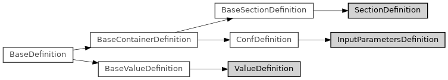

input_parameters_definitions¶
Full name: ase2sprkkr.input_parameters.input_parameters_definitions
Module class hierarchy

Description
This file contains the classes for definitions of InputParameterss: the list of sections and their allowed (or standard) options and their value formats. InputParameterss and potentials have a simlilar structure, so they share common functionalities from sprkkr.common.configuration_definitions
Classes
|
This class describes the format of a task file. |
|
This class describes the format of one value of a task section |
|
This class describes the format of one value of a task configuration |